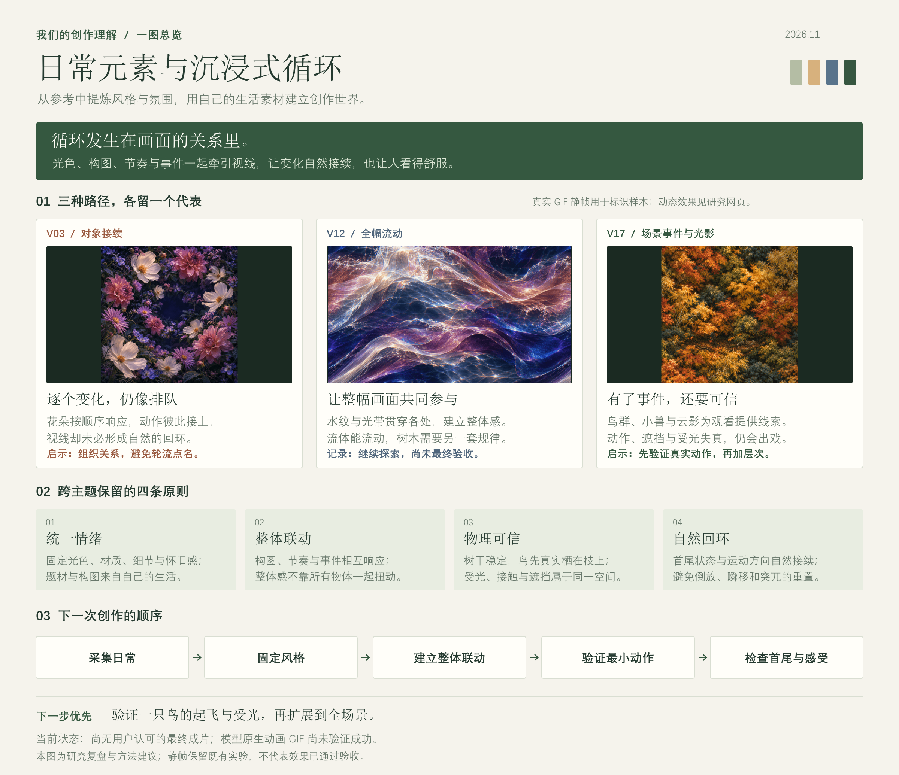

EVERYDAY / EMOTION / LOOP 18 ROUNDS
日常元素
与沉浸式循环
把自己的日常素材，组织成让人愿意停留的创作世界。从花朵、全幅水光到秋林事件，研究统一情绪、整体联动与可信空间怎样共同形成自然的视觉循环。

沿用本轮生成的引导图 · 点击看原尺寸 ↗RESEARCH / MEANING
我们在研究什么，为什么继续研究
从一次效果尝试，积累自己的创作判断。
这项研究对我们的价值
已有方法与后续价值，分别留下依据。
可以怎样扩展到自己的生活与作品？
01 / REFERENCE
从参考里提取关系
参考账号 @JenPanepinto ↗
只迁移风格与氛围，避免复制外观。
作者参考与本轮创作分开保存。参考 GIF 是原帖短视频的本地展示副本；作者使用的具体工具和模型没有证据，不作推断。
02 / EXPERIMENTS
三个代表，按不同方向看
默认只选三条不同路径，相近版本留在完整档案。
切换“全部探索”回看十八轮实验与反馈。
反馈为消息摘录，少量标点整理；“继续”不等于认可。
没有匹配的版本。可以清空搜索，或切换到全部探索。
03 / COMPARISON
把关键分歧放在一起看
也可以在效果卡片中选择两版，自由对照。
04 / FINDINGS
这轮研究留下的判断
结论对应具体效果与反馈，
不把技术通过写成观看体验通过。
“花园、旧照片、电视噪声可以相差很远，
但光感、细节与怀旧气息让它们仍然属于同一个创作世界。”用户对创作世界的归纳
05 / CREATIVE PRACTICE
把研究变成下一次创作
先固定个人语言，再更换日常主题。
查看一图总览 PNG ↗
06 / PROVENANCE
制作方法与能力边界
模型的能力、会话工具的入口、
实际返回的文件，分别核验。
原生静态图
模型生成单张图、九宫格素材或姿态表。
本地合成 GIF
程序完成变形、组帧、轨迹、重照明与编码。
原生动画 GIF
模型直接返回多帧动画；本轮尚未验证成功。
外部模型和费用只作为历史路线记录，相关任务未提交。文件名含 native 不证明原生动画；具体底层模型未报告时保持未知。
07 / SOURCE FILES
素材与证据索引
展开全部归档文件
| 文件 | 对应版本 | 类别 | 大小 | SHA256 摘要 |
|---|